BigSky Planner iOS User Manual
Purpose
BigSky Planner for iPhone and iPad helps set up an observing location, choose telescope equipment and accessories, filter target catalogs, assign observation times, review weather and sky information, and export an observing plan.
First Start Setup
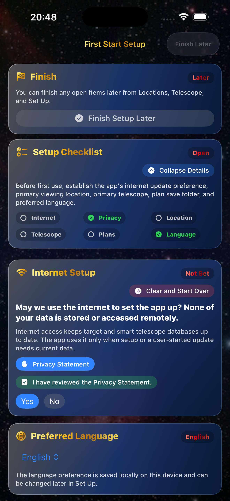
- On first launch, answer whether the app may use the internet for setup and user-started data updates.
- Open the Privacy Statement link before answering if you want to review how data is handled. The privacy review state is saved locally and shown again in Set Up.
- After Internet, Privacy, or Plan Save Folder are answered, their action controls dim so the completed setup items are clear. Use Clear and Start Over to reset first-start setup.
- The Finish card and Setup Checklist stay pinned at the top. The Setup Checklist starts collapsed by default; expand it when you want the detailed checklist text.
- Choose a preferred language.
- Create a primary viewing location using GPS, address entry, or manual coordinates.
- Choose the primary telescope and any compatible accessories. After saving, the telescope card collapses to its summary and the setup flow moves to the plan folder step.
- Choose or create a plan save folder in Files. That folder becomes the default destination for saved plan files and PDFs when available.
- Finish setup when internet preference, privacy review, location, telescope, plan save folder setting, and language are set. You can finish later after answering the internet permission prompt.
Home
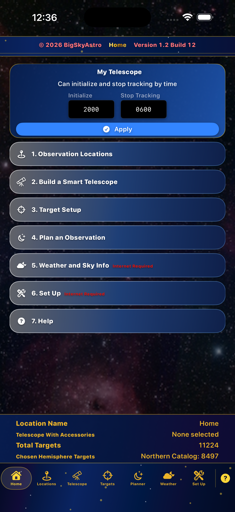
- Home is the main dashboard.
- Use the action buttons to open Locations, Telescope, Targets, Planner, Weather, Set Up, and Help.
- The My Telescope card shows the saved default telescope name and calculates initialize and stop-tracking times from the current phone location when available, or from the saved default location.
- All Vaonis smart telescopes use the calibrated Vespera II Singularity window. Unistellar, ZWO Seestar, Celestron, DWARFLAB, and unconfirmed models use their current readiness estimates.
- The calculated Vaonis field window is labeled
± 1 minutebecause minute rounding can differ slightly by date and source. - Time entry still accepts HHMM, 12-hour text such as
8:30 PM, and 24-hour text such as2030. - When a current plan exists, changing the observing date from Home or Weather shows one confirmation that can save and clear the current plan, clear without saving, or cancel and keep the current plan.
- Applying the telescope time window saves the observing window used by weather and target planning, then sends you to set or confirm a location.
- The top Home banner is compact so the actions and bottom data card remain visible on iPhone.
- The interface follows the iPhone or iPad system appearance automatically; the app no longer forces a dark-only help or shell view.
- The My Telescope card uses tighter padding so the lower information card stays readable.
- The taller bottom data card lists Location Name, Telescope With Accessories, Total Targets, and Chosen Hemisphere Targets in larger dark yellow text on the standard blue card background.
Locations
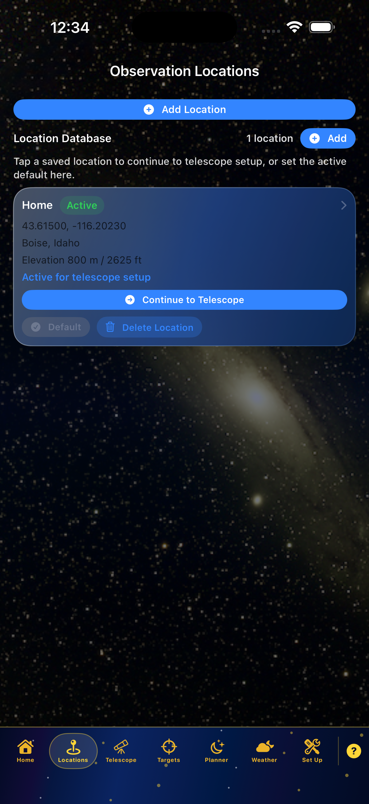
- Save at least one observing location before filtering targets or reading weather.
- Use GPS first when possible. After GPS fills the site, Address Info collapses automatically and can be expanded again.
- If you start a new location card, use Cancel to leave without saving it.
- Manual entry asks for Country first so address labels match the selected country.
- The page scrolls while editing so lower fields and saved locations remain reachable.
- Elevation is saved when GPS or manual entry provides it. Weather pressure is adjusted for the saved elevation when available.
- Only one location can be default at a time.
- Set Default promotes a saved location without re-entering the site details.
- Use Delete Location on a saved location card when a site should no longer be available.
Telescope
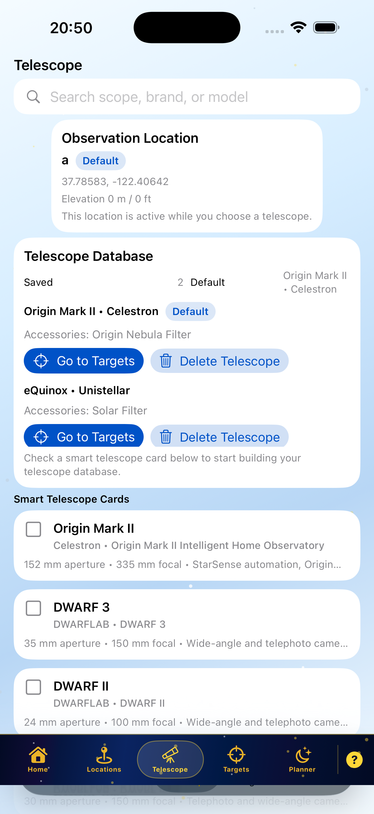
- Select the telescope you plan to use.
- Select compatible accessories for that telescope before saving the setup.
- Hestia is removed from smart telescope setup because it is a phone accessory, not a true smart telescope.
- Saved telescope and accessory data are used in Planner reports.
- The first saved or selected telescope can become the default telescope used by Home and Planner.
- When a telescope is saved as default, the add prompt can return directly to Home Initialization Time.
- Continue to Targets appears after the telescope setup is saved or restored, so the location-to-telescope-to-target flow can proceed without returning Home.
- When moving from Telescope to Targets, the app can restore the last saved plan or start a clean plan. Clean keeps the active location, telescope, catalog, date, and time window while clearing filters and selected targets.
- Restored plans are retimed against the current observing date and time window so old target selections can be checked against tonight's sky.
Targets
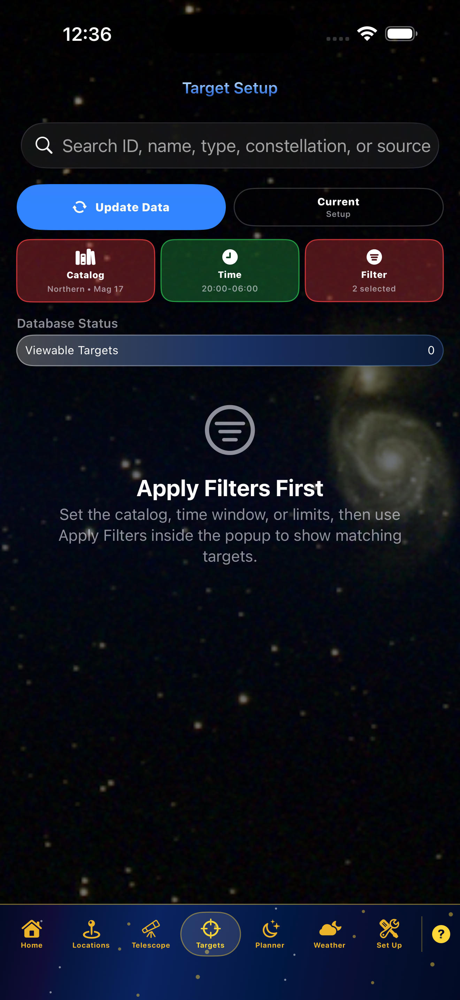
- Use Update Data when target sources need refreshing.
- Use the Current Setup card to expand or collapse the active target settings summary.
- Catalog, Time, and Filter cards open popups. Apply catalog, time, and filter changes from inside those popups before reviewing the target list.
- Action cards use glass status colors: green when a required setup block is valid, red until required user data is entered or the user has opened a filter without setting it.
- The top Apply action has been removed so Catalog and Current Setup have more room.
- Current target setup is held temporarily, so returning to Target Setup restores the active catalog, time, and filter choices.
- The catalog card shows the active magnitude limit so the default target depth is visible before opening filters.
- If transient target data is stale, target cards show Update Data and remain disabled until refreshed.
- Numeric altitude, azimuth, time, and date entry supports the iOS keypad. A Done control is added above the keyboard so the page can be dismissed cleanly without covering cards.
Advanced Target Filters
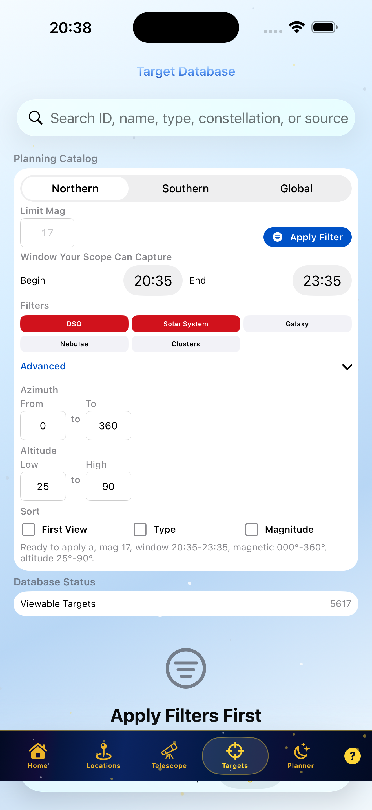
- Open Advanced Filters for magnitude, altitude, azimuth, object type, and observing-window limits.
- Use Common Databases to select curated object groups such as galaxies, nebulae, clusters, stars, multiple stars, solar system targets, and transients before applying the detailed type filters.
- Altitude limits accept 0 through 99 degrees. Azimuth limits accept 000 through 360 degrees.
- Obstructions remove targets that fall inside blocked azimuth or altitude ranges.
- Clear Sky filter ranges can be added one after another without closing the card, and a new range can be canceled before saving.
- Clear Sky ranges are treated as an accepted union. For example, 190-220 degrees with 40-70 degrees altitude and 220-360 degrees with 25-75 degrees altitude will both be considered during target selection.
- When two Clear Sky ranges touch or overlap at the same bearing, the less restrictive lower altitude is used for that bearing.
- Magnitude, target type, observation date and time, azimuth limits, altitude limits, obstruction limits, and Clear Sky ranges are all applied before the target list is built.
- Returning to Advanced Filters activates Apply Filter even if values did not change, so you can rerun the current filter set.
- After applying filters, advanced options collapse and the target data is presented.
- The Display section includes Duration in View. Turn it on, apply filters, and target cards show
Dur: HH:MMfor the time each target remains visible inside the applied observing window. - First View sorting places the earliest available target first. Magnitude sorting places the brightest target first.
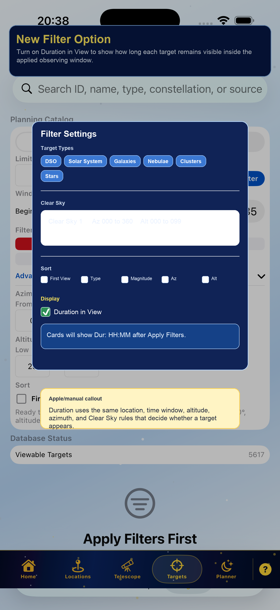
Target Results
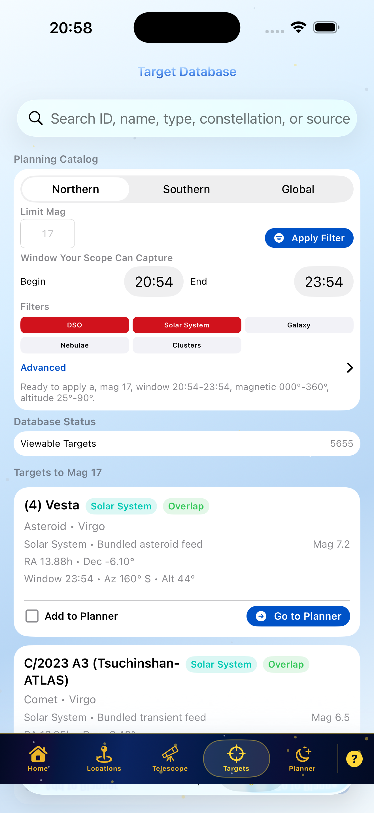
- Target cards show object type, magnitude, first usable time, altitude, and azimuth.
- Star targets are included in the bundled local catalog, including bright stars and binary or multiple-star matches when available.
- When Duration in View is enabled, cards also show
Dur: HH:MMbeside the first usable window. - Use Details to expand a target card. The expanded card stays usable for Check, Sample, and Add Plan while adding telescope-specific capture guidance.
- The Details panel shows Min, Opt, and Best integration times for the saved default telescope and notes whether an unfiltered or filtered capture makes sense for the target type.
- Use Add to Planner for a target that is not yet scheduled.
- Use Go to Planner for a target already added to the plan.
- Checked targets remain visible when switching object types, such as from Nebulae to Clusters, so mixed target plans can be built without losing earlier selections.
- Catalog aliases are merged into one target when Messier, NGC, IC, Caldwell, or common-name entries refer to the same object. Saved plans that used an older alias are resolved to the merged target when reopened.
- Targets that fail obstruction, altitude, azimuth, magnitude, location, or time-window checks are removed from the candidate list.
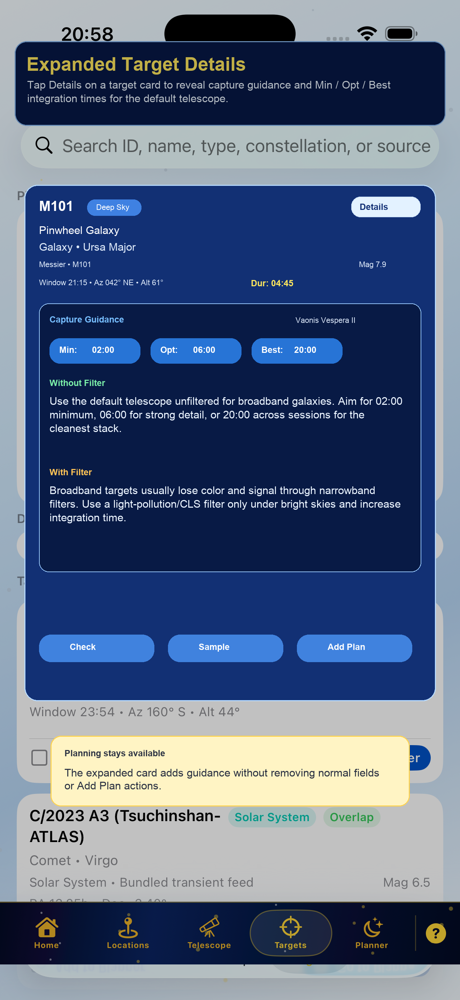
Observation Time Sheet
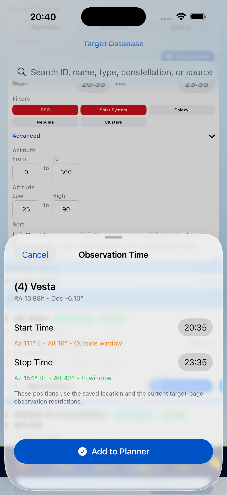
- Set the target start and stop time from the observation-time sheet.
- Start and stop values can be entered in 12-hour or 24-hour form.
- When you set a target's end time, that end time becomes the next target's start time in the current planner order.
- When several checked targets are added, the first starts at initialization and each later target starts at its own first visible time.
- Times after midnight are normalized to the next calendar day of the same observing night.
- The app checks planned target windows and blocks true overlaps.
- If a time conflict is found, cancel or resolve the conflicting target before the new target is committed.
Planner
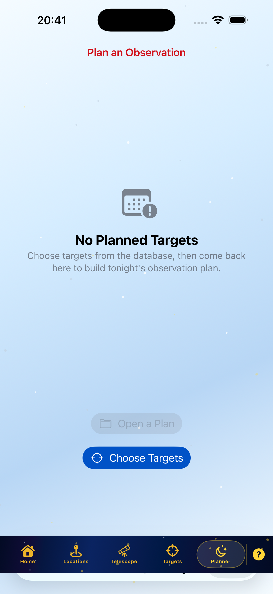
- The Planner page collects targets and observation windows into a plan.
- The plan is shown in start-time order.
- Planner auto-populates a visibility-based chain: each target ends when the next target starts, and the final target ends at the earlier of its visible card end or the observing-window end.
- When a target end time is edited, that end time becomes the next visible target start and cascades forward.
- Target cards scroll under the save and print options so the controls remain reachable.
- If no plan exists, the planner says no plan is currently built and links back to Plan an Observation.
Planner Actions
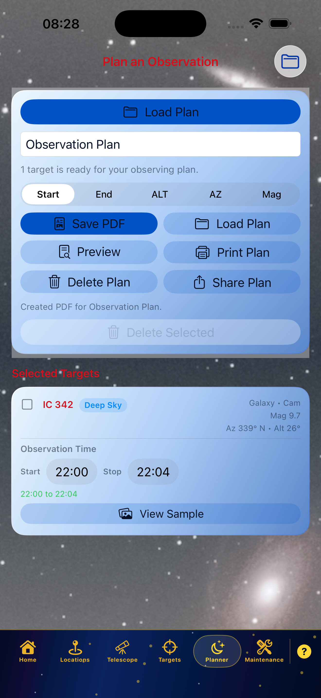
- When a plan is present, Save PDF, Preview, Print Plan, Delete Plan, Fill Gaps, Load Plan, Share Plan, and Quick Ref are available.
- Load Plan opens saved plans. After loading, the app shows
Plan Loadedand asks whether to add more targets. - Choose Yes to go to Targets. Choose No to stay on Planner.
- The loaded plan name and loaded-plan status text turn yellow so it is clear a saved plan is active.
- Printing uses a spreadsheet-style layout with Start, End, ALT, AZ, and Mag. ALT is padded to two digits for low-altitude targets.
- Fill Gaps suggests matching targets for open windows between scheduled planner targets, using the active filters and saved observing location.
- Fill Gaps includes Sample so you can preview a suggested target before adding it.
- Quick Ref opens a preview of the short field report with only target name, first view time, azimuth, and altitude, then exports either PDF or text.
Weather and Sky Info
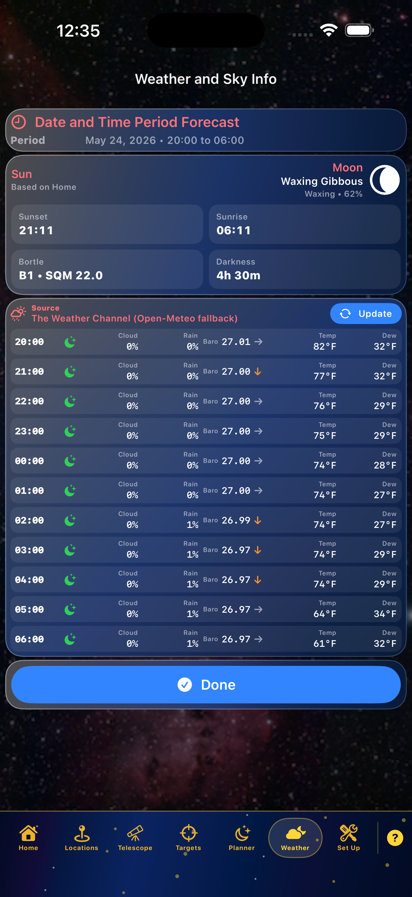
- Weather uses the default viewing location and telescope observing window when available.
- If My Telescope times are set, the viewing period follows that saved initialize/stop window until a saved plan takes over.
- The glass Date and Time Period Forecast card lists the active observing date and time range.
- Changing the observing date from Weather uses the same one-step plan-clear confirmation as Home.
- The Sun/Moon glass card shows Sunset, Sunrise, Vespera Init, Bortle/SQM, and time of total darkness based on the saved location.
- Vespera Init uses the same calibrated Vaonis timing policy that Home applies to Vaonis smart telescopes.
- Weather Setup can optionally use a Weather Underground PWS station ID for current observations while Open-Meteo fills unsupported forecast rows.
- Bortle/SQM is estimated from the saved latitude, longitude, elevation, and nearby population light-pressure reference used by the app.
- The compact Source row names the weather source and includes Update to reload the hourly data.
- Hourly rows list time, icon, cloud percentage, rain chance, barometric pressure with trend arrow, temperature, and dew point.
- Night icons use crescent moon and cloud symbols. Daylight hours use sun and cloud symbols between sunrise and sunset.
- The Done action is kept above the menu bar on iPhone.
- If no valid location is saved, weather cannot calculate local conditions. Return to Locations and save a valid site.
Set Up
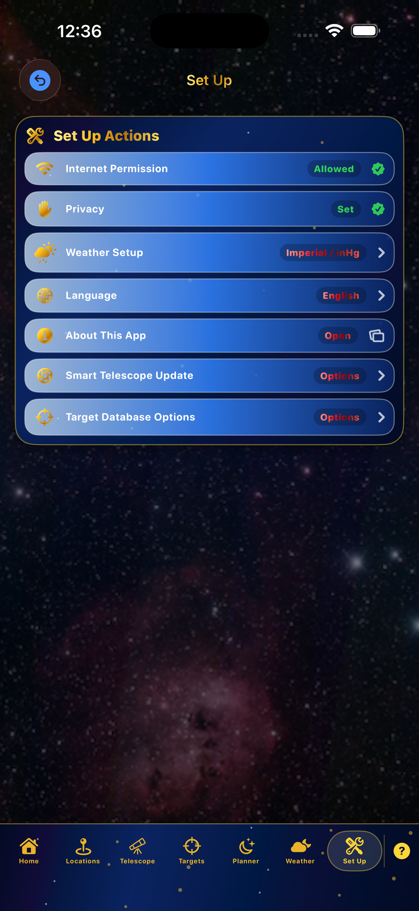
- Set Up contains language, unit preference, internet permission, data update actions, and About This App.
- Internet-required actions are labeled.
- Target and smart telescope database updates are user-started. Target database updates warn before downloading because the dataset may be large.
- Target Database Update summarizes changed transients, lists their names, and shows pulled-and-stored asteroid and comet names such as Ceres and Vesta.
- The app keeps data on the device. Internet access is used for updates and lookups, not remote storage of app data.
- About This App opens controlled in-app web windows for off-site privacy, support, and reference pages.
Help and Clock Support

- Open Help from the question mark icon in the bottom menu bar.
- Help mirrors the major manual sections with embedded screenshots.
- The help content includes first-, second-, and third-level flows.
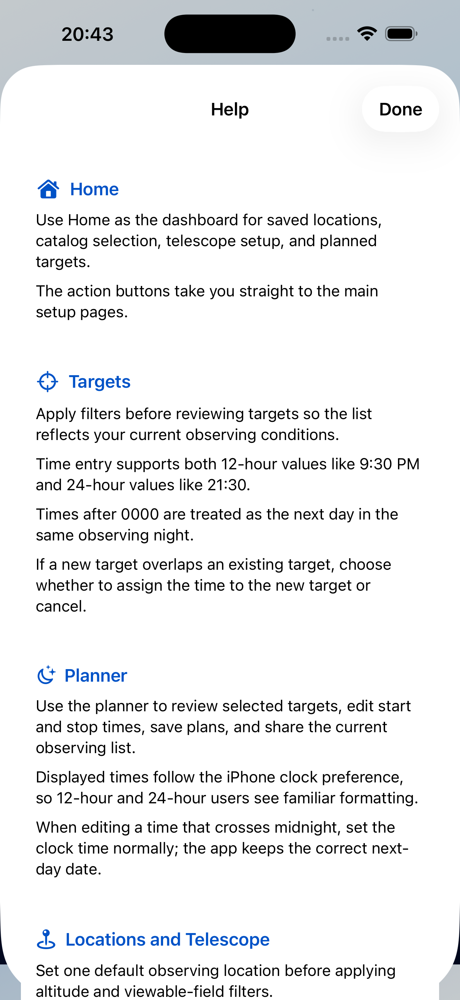
- Displayed times follow the iPhone or iPad clock preference.
- Time entry accepts common 12-hour and 24-hour formats.
- HHMM entry such as
2000is accepted anywhere the app asks for telescope or observation times.
Appearance and Text Scaling
- Light and Dark appearance follow the system setting through
UIUserInterfaceStyle = Automaticand SwiftUIcolorScheme-aware styling. - Standard SwiftUI text styles such as body, headline, subheadline, caption, and footnote participate in Apple text scaling automatically.
- Compact dashboard, tab, chart, and badge labels still use some fixed-size layout fonts so the interface can preserve dense observing data. These are the remaining candidates for a future Dynamic Type pass using relative fonts,
@ScaledMetric, and larger-size layout testing. - The app includes
AppTextOverflowGuardfor focused text-fit checks during development.
Troubleshooting
No Targets Appear
- Confirm a default location is saved.
- Confirm the telescope observing window is set if you are filtering by time.
- Set required red Catalog, Time, or Filter cards, then use Apply Filters inside the popup.
- Loosen magnitude, altitude, azimuth, and object-type settings.
- Check obstruction ranges. A target inside an obstruction range is intentionally removed.
Asteroids Or Comets Look Stale
- Run Target Database Update from Set Up.
- Review the update summary for Small bodies updated, Pulled and stored, and Changed transients.
- Stale transient target cards cannot be used until data is refreshed.
Weather Is Blank Or Wrong For The Site
- Save a valid default location first.
- Confirm latitude and longitude are present.
- Add elevation when available so pressure can be adjusted for the site.
- Confirm internet permission is enabled for weather prediction data.
Location Entry Will Not Save
- Enter a Location Name.
- Use GPS or enter latitude and longitude manually.
- If GPS was used, address fields are optional.
- If manual address is used, choose Country first so fields match the country format.
Numeric Keypad Covers The Target Card
- Tap Done above the keypad after entering the value.
- Scroll the target page so cards pass under the filter panel.
- Reopen Advanced Filters only when more values must be changed.
Plan Load Is Confusing
- After loading a saved plan, watch for the
Plan Loadedprompt. - Choose Yes to add more targets.
- Choose No to return to Planner.
- Yellow plan name and yellow loaded-plan status text identify the active loaded plan.
Print Or PDF Does Not Appear
- Confirm at least one target is in the plan.
- Use Preview first to confirm the plan content.
- Confirm the default plan folder setting if you expect exported plans or Quick Ref copies to appear in Files.
- Try Share Plan if the device print sheet is not available.
Logic Flow Export
The full multi-page logic flow is exported as:
Documentation/iOS-Logic-Flow-Overview.htmlDocumentation/iOS-Logic-Flow-Overview.pdf